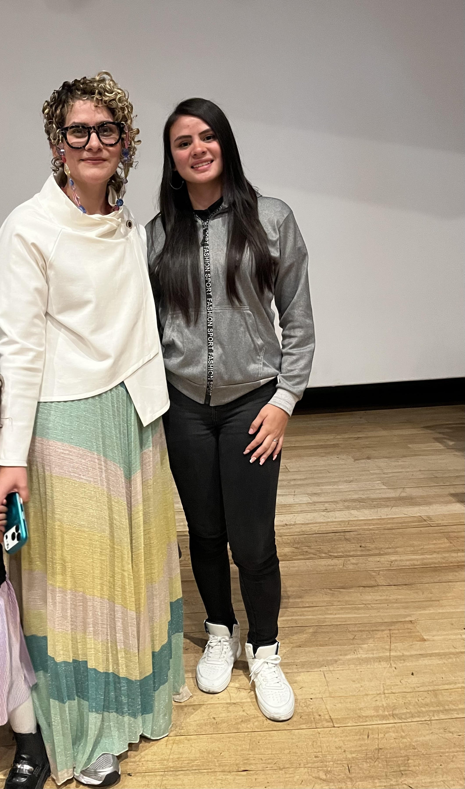

My Experience at Moda ECCI
Color Theory
Aprendí cómo los colores comunican mensajes, generan emociones y afectan la percepción visual. La teoría del color es fundamental para crear interfaces accesibles y profesionales.
Understanding how colors communicate messages, generate emotions, and affect visual perception. Color theory is essential for creating accessible and professional interfaces.
Color Psychology
Exploré cómo los colores influyen en el comportamiento del usuario y en la toma de decisiones. Cada color tiene un impacto psicológico específico en la experiencia digital.
Exploring how colors influence user behavior and decision-making. Each color has a specific psychological impact on digital experience.
Pantone & Consistency
Descubrí la importancia de Pantone para mantener consistencia visual en proyectos. Los códigos de color estandarizados son vitales en diseño profesional y desarrollo.
Discovering the importance of Pantone for maintaining visual consistency. Standardized color codes are vital in professional design and development.
Visual Semiology
Entendí cómo los símbolos, formas y composiciones transmiten significado. La semiología visual es el lenguaje silencioso que comunica sin palabras.
Understanding how symbols, shapes, and compositions transmit meaning. Visual semiology is the silent language that communicates without words.
UX/UI Design Principles
Aprendí que el diseño visual y la funcionalidad son inseparables. Un buen UX/UI combina estética con usabilidad para crear experiencias memorables.
Learning that visual design and functionality are inseparable. Good UX/UI combines aesthetics with usability to create memorable experiences.
Digital Sustainability
Reconocí que el desarrollo sostenible es una responsabilidad. Desde la economía circular hasta la eficiencia tecnológica, cada decisión tiene impacto.
Recognizing that sustainable development is a responsibility. From circular economy to technological efficiency, every decision has impact.
Audiovisual Evidence
Moda ECCI 2026 Documentary
Este video documenta la experiencia académica de Moda ECCI 2026, un evento de transformación digital que integró teoría del color, diseño visual, innovación tecnológica y sostenibilidad. Un registro visual de cómo la creatividad y la tecnología convergen en el desarrollo profesional ADSO.
This video documents the academic experience of Moda ECCI 2026, a digital transformation event that integrated color theory, visual design, technological innovation and sustainability. A visual record of how creativity and technology converge in professional ADSO development.
Photographic Record

Technical Glossary — Bilingual Reference
| Term / Término | Definition (EN) / Definición (ES) | Category |
|---|---|---|
| Teoría del Color / Color Theory | Principios científicos sobre cómo los colores interactúan, combinan y comunican. / Scientific principles of how colors interact, combine, and communicate. | Design |
| Psicología del Color / Color Psychology | Estudio del impacto emocional y comportamental de los colores. / Study of the emotional and behavioral impact of colors. | Design |
| Pantone / Pantone System | Sistema de estandarización de colores utilizado en diseño e impresión. / Color standardization system used in design and printing. | Design |
| Contraste / Contrast | Diferencia visual entre elementos que mejora la legibilidad y accesibilidad. / Visual difference between elements that improves readability and accessibility. | Accessibility |
| Semiología Visual / Visual Semiology | Disciplina que estudia cómo los símbolos comunican significado. / Discipline studying how symbols communicate meaning. | Design |
| UX/UI / User Experience & User Interface | Diseño enfocado en la experiencia del usuario y la interfaz de interacción. / Design focused on user experience and interaction interface. | Design |
| Accesibilidad / Accessibility | Capacidad de un producto digital ser usado por personas con diversas capacidades. / Ability of a digital product to be used by people with diverse abilities. | Accessibility |
| Economía Circular / Circular Economy | Modelo económico que minimiza desperdicios mediante reutilización y reciclaje. / Economic model minimizing waste through reuse and recycling. | Sustainability |
| Sostenibilidad Digital / Digital Sustainability | Práctica de minimizar el impacto ambiental en el desarrollo tecnológico. / Practice of minimizing environmental impact in technological development. | Sustainability |
| Innovación Tecnológica / Technological Innovation | Creación de nuevas soluciones tecnológicas que resuelven problemas reales. / Creation of new technological solutions that solve real problems. | Technology |
| ADSO / Software Development Analyst | Programa de formación tecnológica enfocado en análisis y desarrollo de software. / Technical training program focused on software analysis and development. | Education |
| Diseño Responsivo / Responsive Design | Enfoque que adapta diseños para funcionar en diversos tamaños de pantalla. / Approach that adapts designs to work on various screen sizes. | Design |
| Interfaz de Usuario / User Interface | Medio visual e interactivo a través del cual el usuario interactúa con un sistema. / Visual and interactive medium through which the user interacts with a system. | Design |
| Experiencia de Usuario / User Experience | Conjunto de percepciones y emociones de un usuario al interactuar con un producto. / Set of perceptions and emotions a user has when interacting with a product. | Design |
| Paleta de Colores / Color Palette | Conjunto seleccionado de colores que define la identidad visual de un proyecto. / Selected set of colors that defines the visual identity of a project. | Design |
Sustainability & Innovation
La sostenibilidad no es un concepto ajeno al desarrollo de software. Como desarrolladores ADSO, tenemos la responsabilidad de crear soluciones que sean eficientes, durables y respetuosas con el medio ambiente. La economía circular aplicada a la tecnología significa reutilizar código, optimizar recursos y diseñar sistemas que minimicen el desperdicio digital.
Moda ECCI 2026 demostró que la innovación tecnológica debe ir acompañada de conciencia ambiental. Desde interfaces accesibles hasta arquitecturas sostenibles, cada decisión de diseño y desarrollo impacta el futuro. La formación ADSO nos prepara para ser profesionales responsables que integren sostenibilidad en cada proyecto.
Sustainability is not a concept foreign to software development. As ADSO developers, we have the responsibility to create solutions that are efficient, durable, and environmentally respectful. Circular economy applied to technology means reusing code, optimizing resources, and designing systems that minimize digital waste.
Moda ECCI 2026 demonstrated that technological innovation must be accompanied by environmental awareness. From accessible interfaces to sustainable architectures, every design and development decision impacts the future. ADSO training prepares us to be responsible professionals who integrate sustainability in every project.
Final Conclusion
Moda ECCI 2026 fue una experiencia transformadora que trascendió los límites tradicionales entre diseño y tecnología. Como estudiante ADSO, descubrí que la creatividad no es exclusiva de las disciplinas artísticas, sino el motor esencial que impulsa la innovación en el desarrollo de software, la construcción de experiencias de usuario y el diseño de soluciones digitales con impacto real y medible.
La teoría del color que aprendimos va más allá de la estética. Comprendí que los colores son herramientas de comunicación visual que generan respuestas conscientes, subconscientes e inconscientes en el usuario. Un contraste inadecuado reduce la legibilidad y excluye a personas con discapacidades visuales; un contraste AAA o AA, en cambio, garantiza accesibilidad real. La psicología del color determina cómo los usuarios perciben, confían y actúan dentro de una interfaz digital.
Pantone representa algo crucial: la consistencia visual. Los códigos de color estandarizados son la diferencia entre un proyecto amateur y uno profesional. Como desarrolladora ADSO, integrar sistemas Pantone en mis proyectos significa garantizar que cada componente visual comunique la identidad y los valores del proyecto de manera coherente, sin importar dónde se implemente.
La semiología visual me enseñó que los símbolos, formas y composiciones transmiten significado sin necesidad de palabras. Un icono bien diseñado, una disposición estratégica de elementos, o la selección cuidadosa de tipografía comunican mensajes poderosos. Esta es la base del UX/UI: cada pixel debe servir a un propósito comunicativo. El diseño visual no decora la funcionalidad, la define.
La sostenibilidad y la economía circular no son temas alejados de la innovación tecnológica. Aprendí que un desarrollador responsable considera el impacto ambiental de sus decisiones: código optimizado que consume menos recursos, algoritmos eficientes, arquitecturas que minimizan el desperdicio digital. La innovación sostenible es la innovación que perdura.
"La integración de teoría del color, semiología visual, UX/UI, sostenibilidad y tecnología no es una combinación ocasional — es el fundamento sobre el cual un profesional ADSO construye soluciones que el mundo necesita hoy. Cada línea de código, cada elección de color, cada componente de diseño es un acto de responsabilidad."
"The integration of color theory, visual semiology, UX/UI, sustainability and technology is not an occasional combination — it is the foundation upon which an ADSO professional builds solutions the world needs today. Every line of code, every color choice, every design component is an act of responsibility."La formación ADSO me preparó para ser más que una desarrolladora de software. Me preparó para ser una creadora de experiencias digitales que comunican, que incluyen, que respetan el medio ambiente y que generan impacto. Moda ECCI 2026 fue la confirmación de que el futuro del desarrollo tecnológico pertenece a profesionales que integren diseño, creatividad, conocimiento técnico y responsabilidad social.
Moda ECCI 2026 was a transformative experience that transcended the traditional boundaries between design and technology. As an ADSO student, I discovered that creativity is not exclusive to artistic disciplines, but the essential engine that drives innovation in software development, user experience construction, and the design of digital solutions with real and measurable impact.
The color theory we learned goes far beyond aesthetics. I understood that colors are visual communication tools that generate conscious, subconscious, and unconscious responses in the user. Inadequate contrast reduces readability and excludes people with visual disabilities; AAA or AA contrast, on the other hand, guarantees true accessibility. Color psychology determines how users perceive, trust, and act within a digital interface.
Pantone represents something crucial: visual consistency. Standardized color codes are the difference between an amateur project and a professional one. As an ADSO developer, integrating Pantone systems into my projects means ensuring that every visual component communicates the project's identity and values coherently, regardless of where it is implemented.
Visual semiology taught me that symbols, shapes, and compositions transmit meaning without needing words. A well-designed icon, a strategic arrangement of elements, or the careful selection of typography communicate powerful messages. This is the foundation of UX/UI: every pixel must serve a communicative purpose. Visual design does not decorate functionality, it defines it.
Sustainability and circular economy are not topics removed from technological innovation. I learned that a responsible developer considers the environmental impact of their decisions: optimized code that consumes fewer resources, efficient algorithms, architectures that minimize digital waste. Sustainable innovation is innovation that endures.
ADSO training prepared me to be more than a software developer. It prepared me to be a creator of digital experiences that communicate, that include, that respect the environment, and that generate impact. Moda ECCI 2026 was the confirmation that the future of technological development belongs to professionals who integrate design, creativity, technical knowledge, and social responsibility.